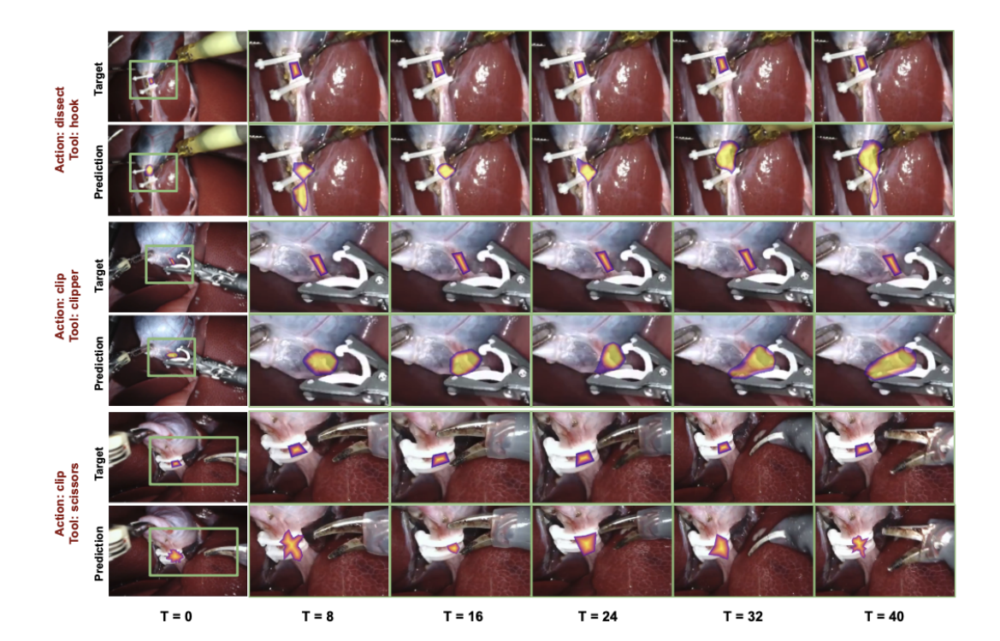
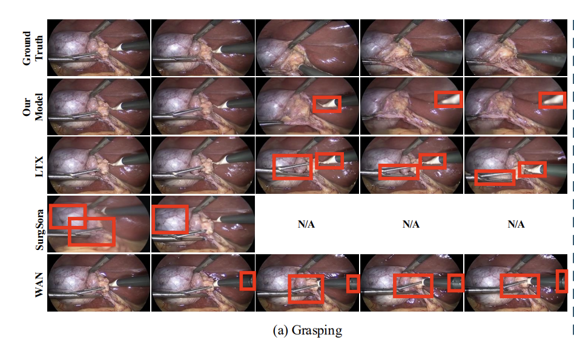

Computer Vision · Surgical AI · Robotics
Chenyan Jing
I recently completed my M.S.E. in Robotics at Johns Hopkins University.
My research interests lie at the intersection of computer vision, surgical AI, and robotic perception, with a focus on surgical video understanding, functional landmark localization, medical robotics, and perception systems that support intelligent decision-making in complex environments.
More broadly, I am interested in how visual representations can connect perception, prediction, and action, and in building models that help intelligent systems understand scenes, reason about tool–tissue interactions, and support safe robotic autonomy.
If you would like to discuss research opportunities, please feel free to reach out via email.
Surgical Video Understanding
Medical AI
World Models
3D Vision
Robotic Perception

News
Jun 2026
Our paper Dense Structural Priors for Sparse Functional
Landmark Localization in Surgical Videos is available on arXiv.
May 2026
I completed my M.S.E. in Robotics at Johns Hopkins University.
Selected Publications

Predictive Retinal Motion Compensation for Robotic Subretinal Injection
Manuscript under review
A vision-based framework for retinal motion estimation and temporal forecasting to support safer robotic subretinal injection.
Under Review
Selected Projects

AffordTissue: Dense Tissue Affordance Prediction
Collaborative research on predicting tool-action-specific tissue affordance regions as dense heatmaps in surgical videos, combining temporal visual features with action- and tool-conditioned modeling.

SAW: Surgical Action World Model
Collaborative research on controllable surgical video generation conditioned on language, reference scenes, tissue affordance masks, and tool trajectories for simulation and surgical AI.
Monocular 3D Human Pose and Metric Depth Estimation
Combined YOLOv8 keypoint detection and Depth Anything V2 to recover monocular 3D human pose, calibrate metric scale, and back-project image-space landmarks using camera intrinsics.
UR5 Robotic Drawing and Manipulation
Implemented inverse kinematics, resolved-rate motion control, and executable trajectory generation for a UR5 robotic drawing task.